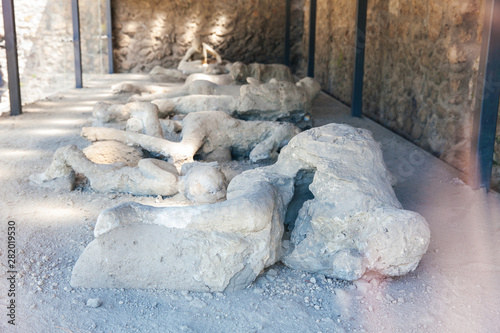

Contents:
Pompeii‚ a city that withstood the test of time‚ full of ancient history and artifacts from thousands of years ago. The city itself is located near a famous volcano known as Mount Vesuvius‚ an active volcano that has erupted over 50 times. It’s most famous eruption occurred on August 24th‚ 76 CE‚ when it erupted and buried the ancient city of Pompeii under a layer of thick volcanic ash. Many buildings were destroyed and many died that night. Years later‚ when the city was finally rediscovered‚ it was as if a time capsule had been opened. The whole city had been perfectly preserved thanks to the blanket of volcanic ash over it. The city was unearthed in the 1700s‚ and the discovery of a sophisticated Roman city had astonished the world. That being said‚ let’s dive into more interesting facts about Pompeii.
It is believed that Pompeii was originally constructed somewhere around the 9-8th century BC. It started when the Oscans‚ a population from central Italy‚ founded five villages in the area. Eventually‚ the separate settlements merged together and a single community was formed. A wall was built around this new community‚ encompassing a big area of land with much agricultural land. From there on out‚ the city began to flourish and new buildings and trade methods were introduced. This was around the time when maritime trade was established in Pompeii. The city was already ahead of its time‚ with many lavish villas and all other kinds of houses‚ temples‚ public buildings such as an amphitheater‚ and a place for the public to gather known as a forum.


The city of Pompeii was said to have supported around 10,000-20,000 inhabitants at the time of it’s destruction. As it was near the Bay of Naples‚ it became an attraction for many wealthy vacationers from Rome who enjoyed the coastline. By the first century AD‚ Pompeii was a prospering city that served as a resort for Rome's distinguished citizens. The paved streets were lined with elegant houses and elaborate villas. Tourists‚ townspeople‚ and slaves scurried in and out of small factories‚ artisans’ shops‚ taverns‚ cafes‚ brothels and bathhouses.
The eruption of Mount Vesuvius happened on August 24th‚ 76 CE‚ and lasted for two days. The first phase was pumice rain that lasted for about 18 hours. Many inhabitants managed to escape in this time‚ supported by the fact that only about 1‚500 bodies have been found thus far. At some time later into the night or early next day‚ pyroclastic flows began near the volcano‚ and very hot ash clouds began to form. All structures in their path were wholly or partly destroyed and the remaining population was either incinerated or suffocated to death. By the evening of the second day‚ the eruption was over and the city had been buried under 6 meters of ash and pumice stones which served to protect it for the next 17 centuries. About 2000 Pompeiians were dead‚ but the eruption killed about 16‚000 people in total including the ones from neighbouring cities.
The ruins of Pompeii remained mostly untouched until the year 1748‚ where they were rediscovered by a group of explorers who were looking for ancient artifacts. When they began to dig‚ they found that the city was almost exactly the same as it had been almost 2‚000 years ago. The buildings were intact‚ skeletons were frozen right where they had fallen‚ and everyday objects and household goods littered the streets. Archaeologists even discovered jars of preserved fruit and loaves of bread. Excavations over time have revealed over 2.5 km of the city walls‚ some shops such as the inn or snack bar‚ ceramics‚ meats such as duck‚ goat‚ pig‚ etc‚ many fine paintings or sculptures‚ the Temple of Apollo‚ the Amphitheater‚ and much more. But only two thirds of Pompeii have been excavated and the remaining third‚ around 22 hectares‚ is still covered in debris from over 2‚000 years ago. As of today‚ the excavation of Pompeii has been going on for almost three centuries‚ and people are still just as fascinated by this city’s bizarre ruins as they were in the 18th century.

Return to the Top of the page?